Cano de ferro
Arma
| Atributo | Valor |
|---|---|
| Dano | 6 |
| Alcance | 1,5 m |
| Intervalo | 0,75 s |
| Arco do golpe | 120° |
| Alvos por golpe | 2 |
| Durabilidade | 30 |
| Dano por segundo (teórico) | 8 |
Onde achar
Chance mostrada: a parte que este item ocupa entre os itens da mesma raridade naquele tipo de lugar.
| Lugar | Chance na raridade | Móveis |
|---|---|---|
| Bombeiros | 11,1% | Armário, Caminhão, Gaveta, Depósito, Caixa de ferramentas, Mesa de escritório |
| Construção | 5,6% | Prateleira, Caixa de ferramentas, Estoque nos fundos, Balcão, Depósito, Mesa de escritório, Armário, Gaveta |
| Casa | 1,7% | Armário da cozinha, Garagem, Gaveta, Estante, Criado-mudo |
Receitas
Usado como ingrediente
| Receita | Ingredientes | Ferramentas | Onde | Habilidade | Resultado |
|---|---|---|---|---|---|
| Lança improvisada | Cano de ferro ×1, 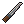 Faca de cozinha ×1,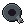 Fita adesiva ×2 | — | Bancada | Mecânica 1 | 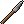 Lança improvisada ×1 |
| Maca (enfermaria: cicatriza mais rápido na base) | 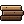 Tábuas ×3,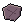 Trapos de pano ×3,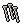 Pregos ×2, Cano de ferro ×1 | — | Bancada | Carpintaria 1 | Maca (enfermaria: cicatriza mais rápido na base) (móvel) |
| Fogão a lenha (cozinhar sem chamar atenção) | 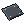 Chapa de metal ×1, Cano de ferro ×1, Pregos ×2 | — | Bancada | Mecânica | Fogão a lenha (cozinhar sem chamar atenção) (móvel) |
| Holofote (com gerador e gasolina) | 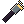 Lanterna ×2,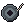 Arame ×1, Cano de ferro ×1 | — | Bancada | Mecânica 1 | Holofote (com gerador e gasolina) (móvel) |
| Barraca (lona, canos e corda) | 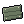 Lona ×2, Cano de ferro ×2,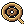 Corda ×3, Fita adesiva ×2 | 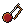 Agulha e linha | Bancada | Costura 2 | 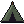 Barraca ×1 |
Código: cano